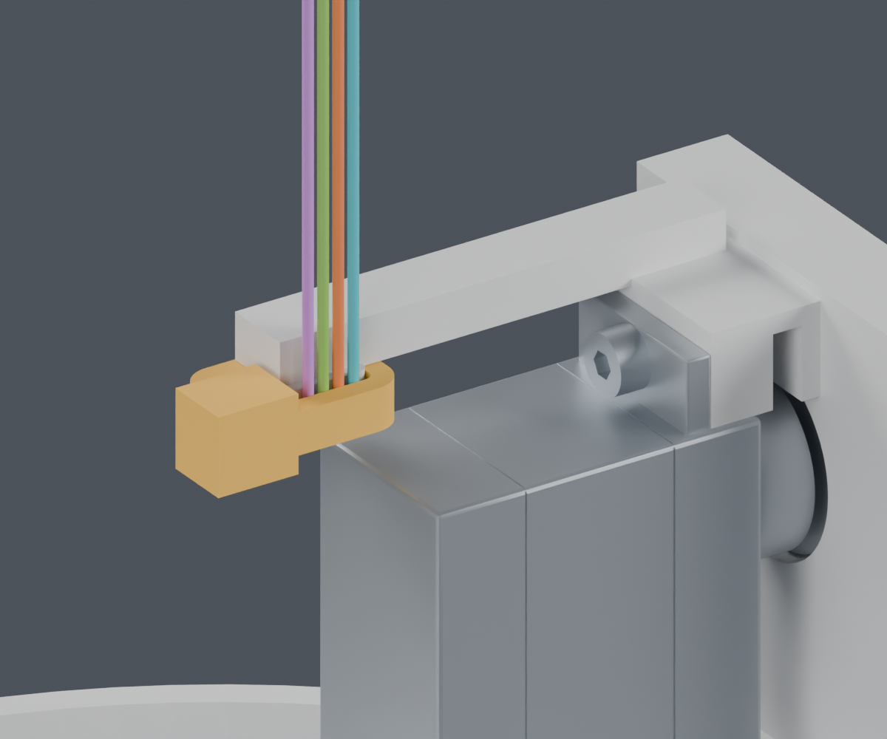
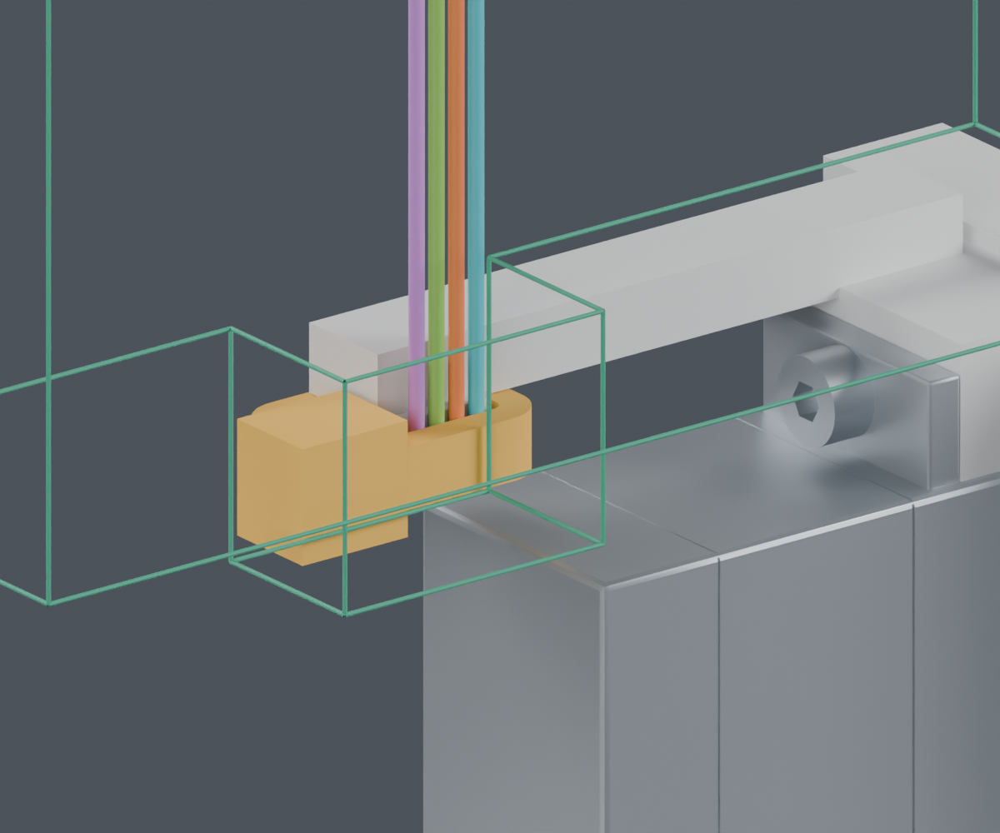
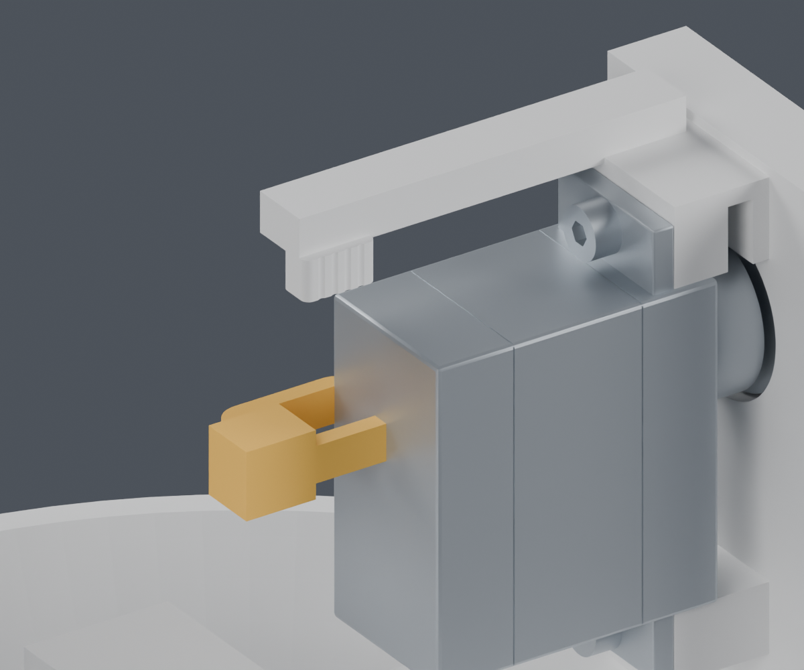
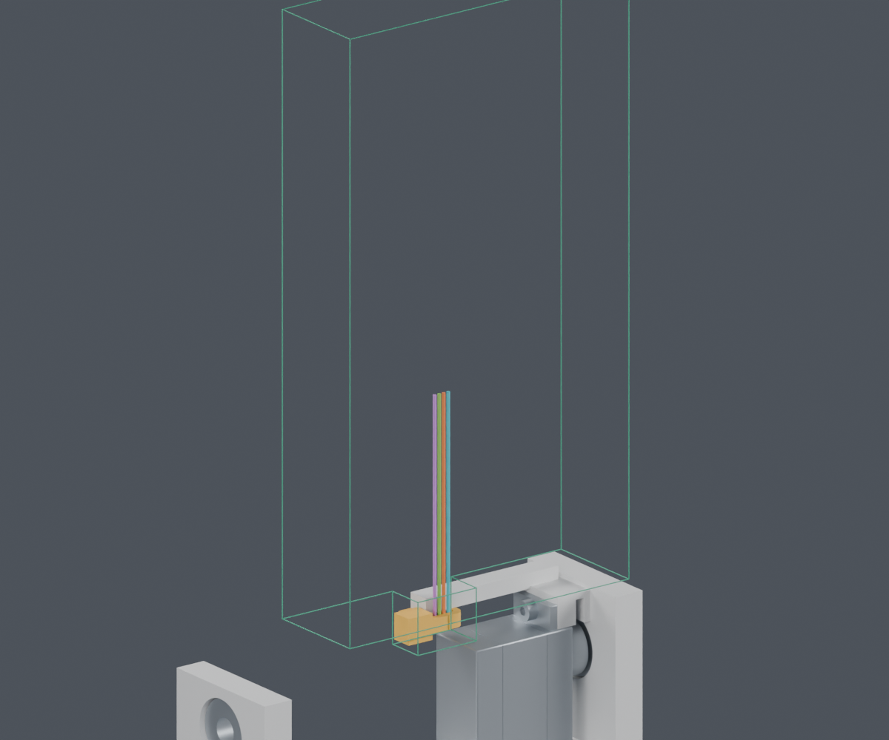

三份T18R官方尺寸图已取得。补查了带身与扣头的方向、局部装入和剪尾工具空间；支持“先预放扎带，再装俯仰舵机”继续细化。
独立候选，主模型仍为M1.47。柔性穿紧、全部固定点、整束装入和最终线长尚未完成，完整线束仍BLOCKED。
扎带图纸：CSC · 2025版、CSH · 2019版、CSE · 2008非受控对照。采购版本未冻结，带身/扣头内部安装形态仍有假设。逐项尺寸及证据等级。
JST连接器和端子的目录已经取得。舵盘、相机完整排线等仍缺的字段列在公开资料补查；项目分支、固定点和长度由我们继续设计。


带宽按2.7mm、厚1.3mm、扣头按5.3×4.3×5.0mm分配。未标的扣头孔轴和弯曲形态注明ASSUMED。工具参考79 22 125的厂家尺寸，包含开口余量；图中省略尚未安装的Yaw舵机、俯仰头框、CAM和外壳。


| 检查 | 结果与范围 |
|---|---|
| 带身实体 | 非空单体，93.82mm³；解析体积校核通过 |
| 有方向扎带 / 既有线路 | 2653次相对位置，44条路线和4个局部直段通过；有限姿态 |
| 剪尾空间 | 工具从上接近60mm的包络通过，台面子装配间隙2.14mm |
| 既定最终线环与工具 | 有碰撞，要求先剪尾后整理线环；不代表所有工具/方向均不可用 |
| 柔性穿紧、其余固定与整束装入 | NOT_TESTED；没有把局部通过算成完整安装通过 |
没有发布下料长度或安装拉紧力。80N是产品环拉断指标；压伤、拉脱、PA12蠕变、疲劳与打印强度均未验证。
首轮带身多边形方向错误，输出空实体；原报告已作废。修正后加入非空/单体/解析体积检查，再完整重跑。无效记录。
完整说明 · 独立Blender · 带身检查 · 安装与工具检查 · 来源回执 · 复现命令 · 交付清单 · 前一阶段压线座